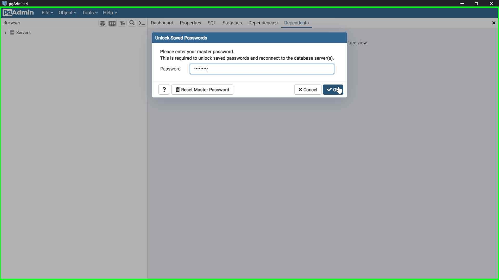
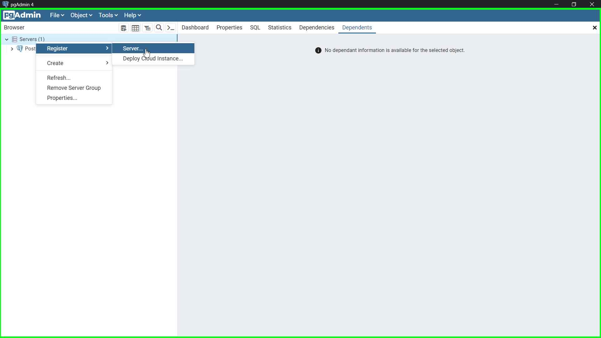
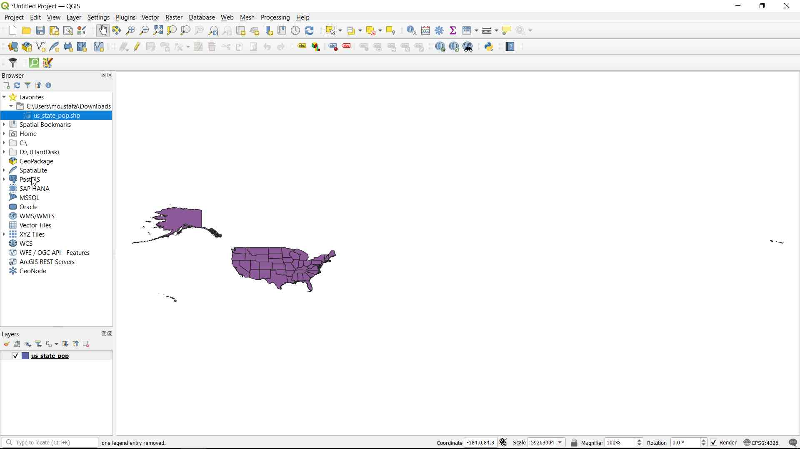
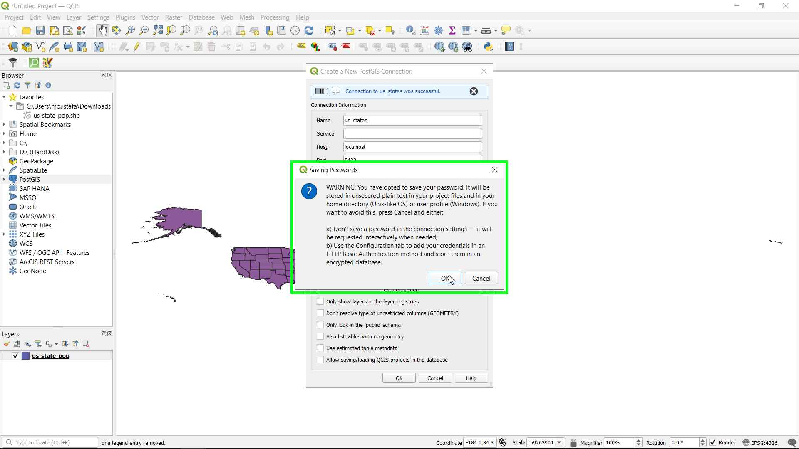
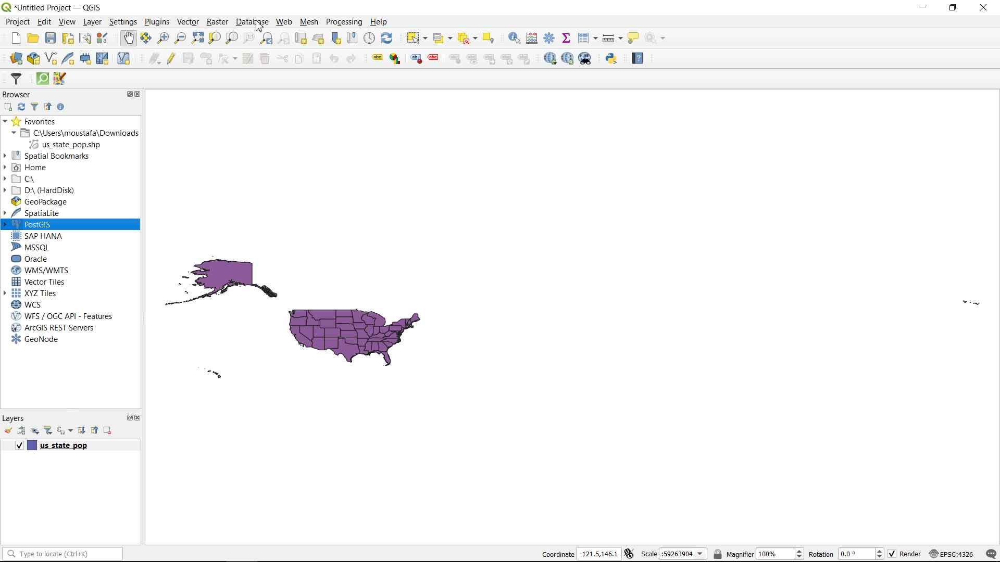
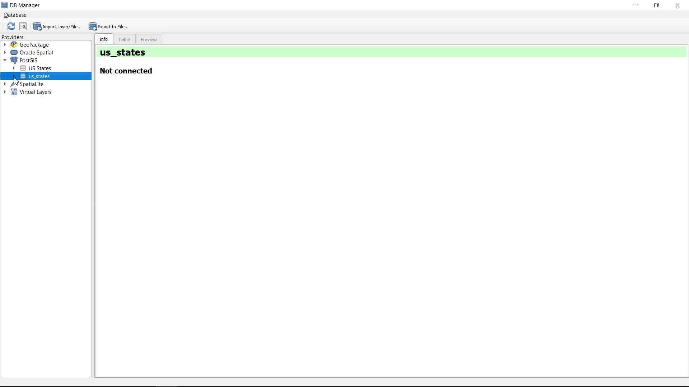
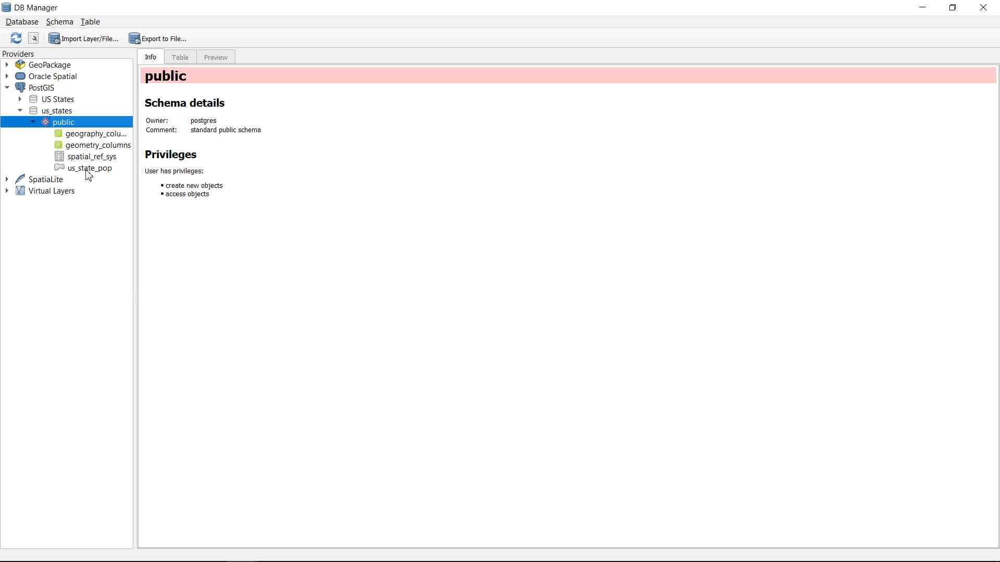
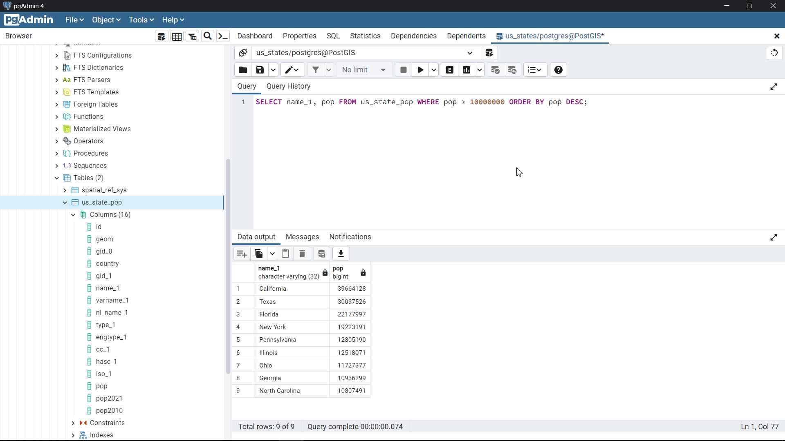

Create a PostGIS Database:
-
This is the second tutorial about using PostgreSQL database and PostGIS spatial extension, you can find the first tutorial which cover installing PostgreSQL and PostGIS on Windows os here
-
In this tutorial we will learn how to create a PostgreSQL database and add PostGIS spatial extension to it.
-
I will use the same data I used in my SpatiaLite database tutorial you can find it here
Steps
- Create a Server inside pgAdmin 4 to contain PostGIS databases
- Create a PostgreSQL database and add an extension to PosGIS
- Connect PostGIS database in QGIS
- Add data to PostGIS database using QGIS DB Manager
- Run SQL Queries in pgAdmin 4
Create a Server inside pgAdmin 4 to contain PostGIS databases:
-
Open start menu and search for pgAdmin 4 then open it.
-
When you open pgAdmin it will ask you to enter your password, enter it and click Ok.


-
Expand the Servers to see its content (It will ask you to type your password again, you can save your password for future use).
-
You will see a server called PostgreSQL 14 which we can use to create databases inside it, But, we will register a new server which will contain only databases with PostGIS spatial extension.


- Rigth click on Servers and choose Register > Server

- The Register - Server window will appear. In the Name box type PostGIS (or any other name you want).


-
Next, Click on the Connection tab and type localhost as the Host name / address (meaning that our server will run locally in our computer), and keep the Port, Maintenance database and Username with their default values (5432, postgres, postgres).
-
Add a password to your server (you can choose the same password for the database and other servers ) then toggle the Save password option, Finally click Save.

- You will see that a new Server called PostGIS added to your Servers in pgAdmin Browser panel

Create a PostgreSQL database and add an extension to PosGIS
- Expand the PostGIS Server and right click on Databases and choose Create > Database...
- The Create - Database window will appear. Type us_states ad the Database which will create a database called us_states (Also you can name your database whatever you like).

- Click on SQL tab to see the SQL command which will be used by pgAdmin to create your database then click Save:
- Now its time to add an PostGIS extension to our new database. Expand the us_states database and right click on Extensions then choose Create > Extension...
- The Create - Extension window will appear. In the Name type postgis and left choose it from the dropdown menu.


- Again click on the SQL tab to see the SQL command that pgAdmin will use to add an extension to the database. Then click Save.


- Now that we have a PostgreSQL database with the PostGIS spatial extension added to it we can continue to our next step to connect our database to QGIS.
Connect PostGIS database in QGIS
-
Open the QGIS software and create a new blank project.
-
Add the 'us_state_pop' shapefile to the project interface as this is the data we are going to add to our database.


- Now, from the QGIS Browser panel right click on PostGIS and click on New Connection...


- The Create a New PostGIS Connection window will appear. Type us_states as the Name of the connection, localhost as the Host, 5432 as the Port and us_states as the Database. Then click on Basic inside Authentication panel:

- In the Basic Authentication type your database username (postgres) and your password and click on Store to save your credentials for future use. Finally click Ok to connect to the database
- You will see a warning about saving your password inside QGIS. But its okay if you are the only one using your computer. Click Ok to confirm or Cancel then uncheck the Store checkboxes if there is someone else who has access to your computer.

Add data to PostGIS database using QGIS DB Manager
- In the QGIS window click on Database and choose DB Manager...

- The DB Manager window will appear, Expand the PostGIS and us_states database to connect to the database and see its content

-
Now its time to add our data to the database.
-
In the QGIS DB Manager window click on the Import Layer/File... button.
-
The Import vector layer will appear. In the Input dropdown menu choose the us_state_pop shapefile and in the Schema dropdown menu choose the public scheme.

- As we did in the SpatiaLite tutorial we can add an id to our database table and Create a spatial index which will help us to query the database fast. Finally click Ok to load the data to the database.


- You will see a new table called us_state_pop added to our public schema, expand it and click on the Table tab to see its content




- We can run our SQL queries inside QGIS DB Manager like we did in the SpatiaLite tutorial, But, in this tutorial lets use another option which is pgAdmin. That's what we are going to do the next step.
Run SQL Queries in pgAdmin 4
- Back to pgAdmin 4 if we expand the us_states Schemas > public > Tables we will see the us_state_pop table added to our database.


- Expand the table to see its content


- Now, lets use SQL to Query our database. Right click on the us_state_pop and choose Query Tool

- A new Query window will appear which we can use to type our SQL queries

- Let's type a SQL query to see all the content in our table and click the arrow button to execute the query
SELECT * FROM us_state_pop;


- Another SQL query which will return the name and population count of all the us states that has more than 10 million population count.
SELECT name_1, pop FROM us_state_pop WHERE pop > 10000000;

- The next query will return the same output of the last query but the data will be orderd descendingly by the population count:
SELECT name_1, pop FROM us_state_pop WHERE pop > 10000000 ORDER BY pop DESC;

- That's it for today's tutorial. We learned how to use the free PostgreSQL database management software pgAmin to create, manage and query a spatial database.